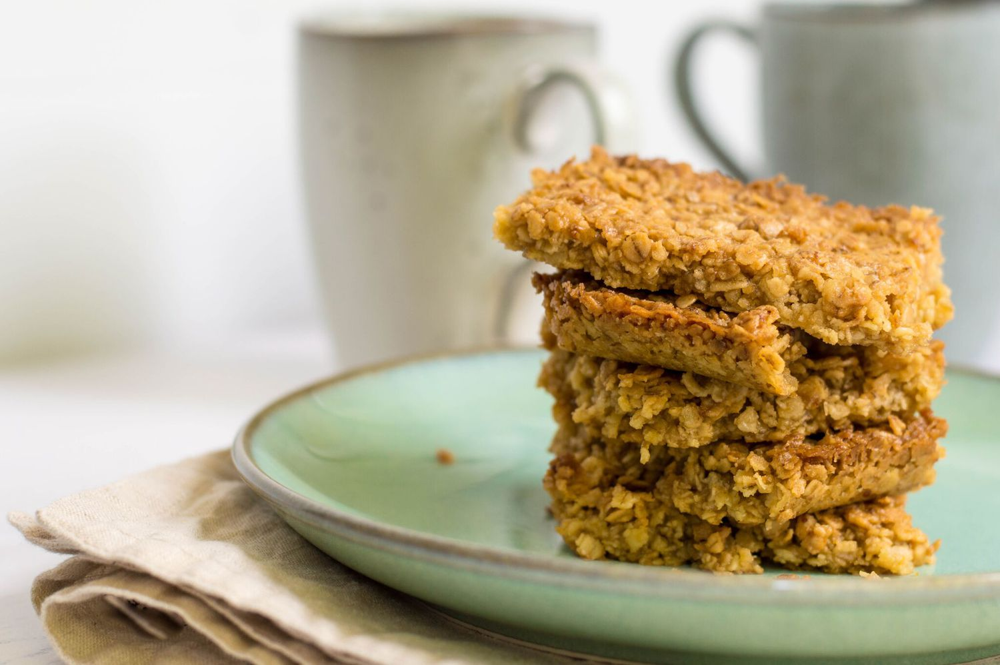

Flapjacks
Home

A recipe to make the gooiest flapjacks ever!
Ingredients
- 250g porridge oats
- 125g butter
- 125g light brown sugar
- 2-3tbsp golden syrup
- 100g glace cherries
Method
- Preheat the oven to 180c and line a 20x20cm baking tray
- Melt the butter and golden syrup in a pan
- Stir in the sugar until melted but not boiling
- add wet ingredients to dry ingredients and mix well
- add glace cherries nd stir
- smooth mixture into the baking tine and bake for 15 mins